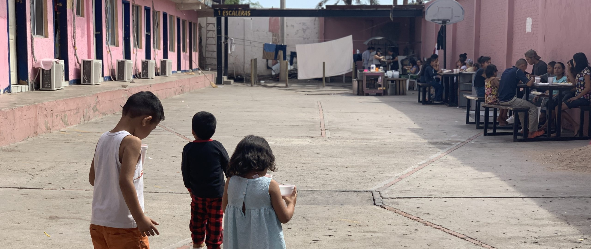
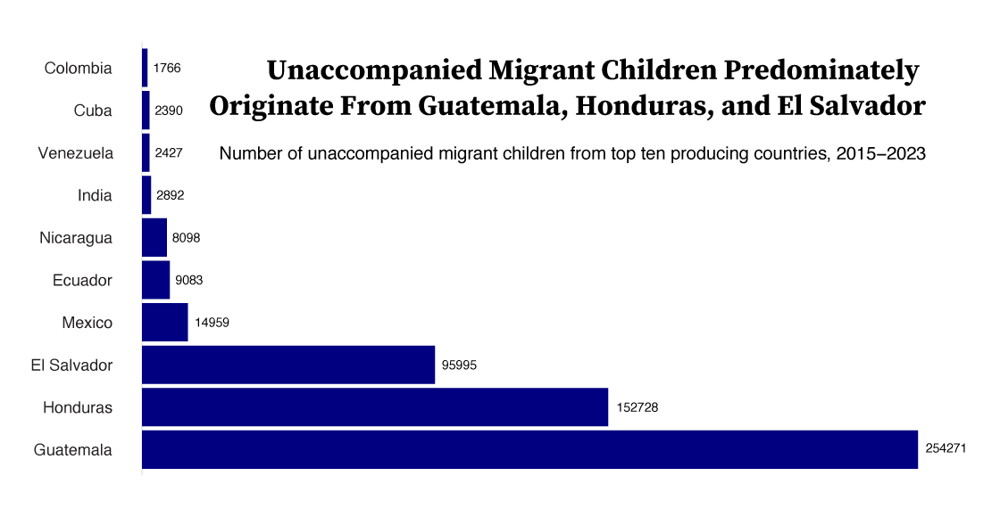
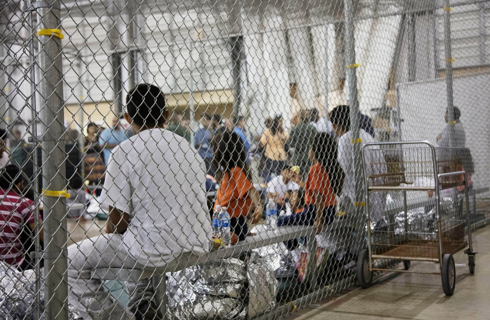
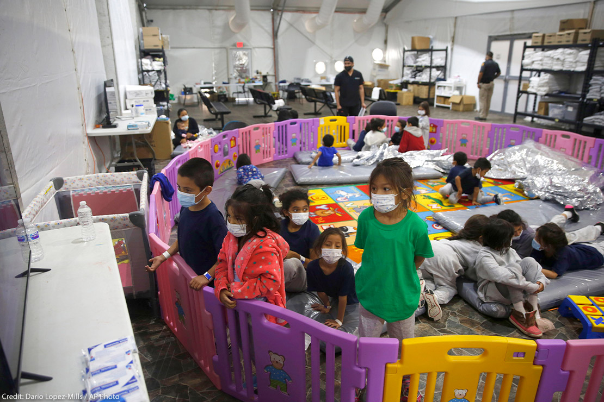
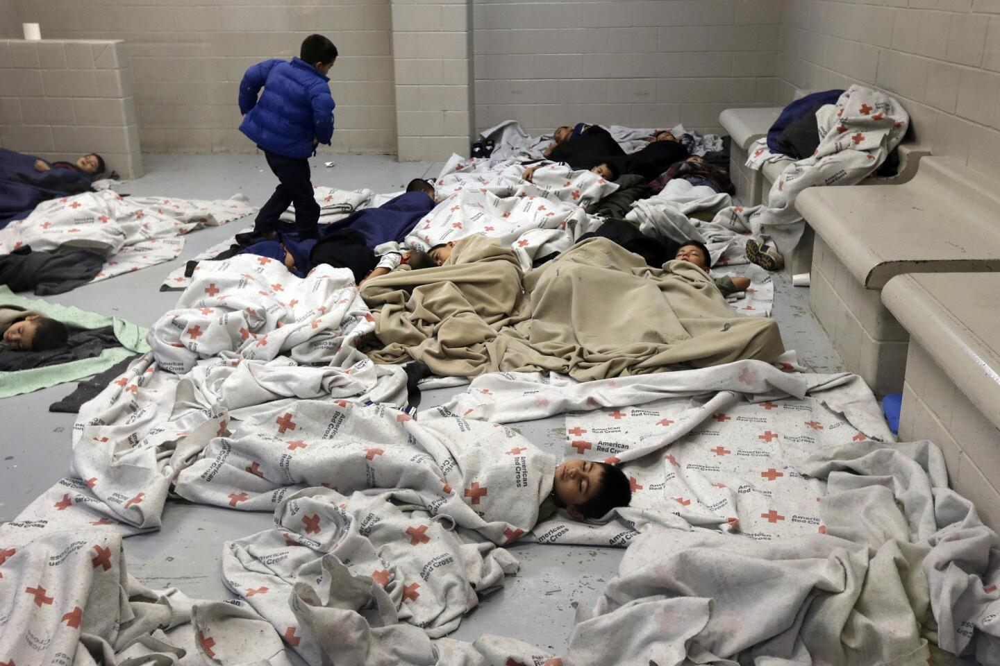
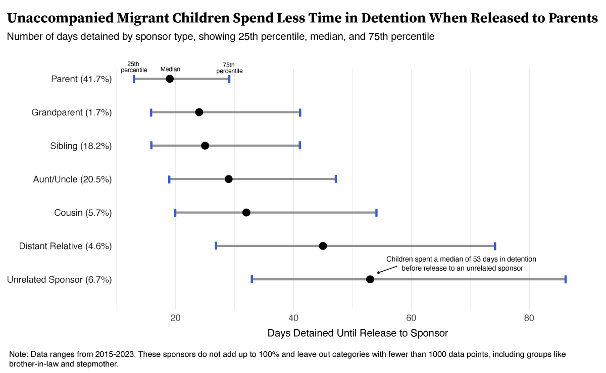
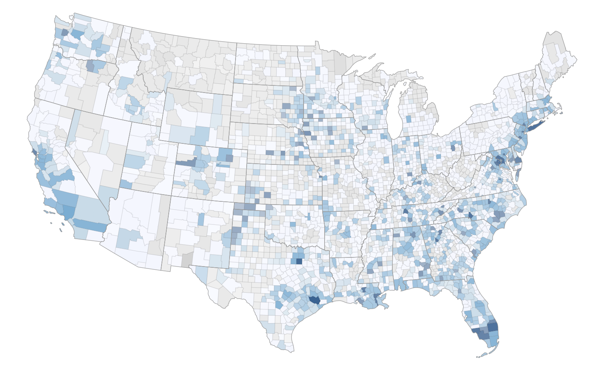

By Tabitha Lynn
May 1, 2025
Hundreds of thousands of children migrants arrive in the U.S. without adult guardians each year. These children are often fleeing persecution, violence, or economic hardship, arriving at U.S. borders seeking safety and new opportunities. They are met by immigration authorities, who place them in detention centers run by the Office of Refugee Resettlement (ORR) until they are either released to sponsors in the U.S. or repatriated to their home countries.
As the Trump Administration continues to crack down on migration and institute stricter policies, unaccompanied migrant children (UACs) are increasingly vulnerable to long detention stays and weak legal protections.
As of March 2025, the Trump Administration has moved to cut funding to a program that provides legal representation to tens of thousands of UACs. This leaves thousands of children to represent themselves in court — usually without knowledge of the local language, culture, or law. The United States is the one of few countries that does not guarantee legal counsel to asylum seekers, including children, and only 56% of UACs in 2023 had representation.
Using data released by the New York Times and originally collected by the U.S. department of Health Human Services from 2015-2023, this data narrative intends to explore the origins, demographics, and current locations of children migrating to the United States without an adult. In doing so, I hope to illuminate the lives and experiences of an extremely vulnerable population affected by current migration policies.

From 2015 to 2023, over 550,000 children arrived in the United States without an adult. Over 90% of these unaccompanied migrant children originate from the Northern Triangle of Central America — Guatemala, Honduras, and El Salvador. While these three countries rank on the most popular origin countries for migrants at the Southern border overall, notably other top producing countries, like Mexico, Cuba, and Venezuela come nowhere close. This can likely be attributed to a high level of violence, corruption, and gang warfare in the Northern Triangle that leave children at high risk for gang recruitment. Countries in the Northern Triangle have some of the highest child homicide rates in the world.
After being detained at the border, children are kept in temporary detention centers near the border. Here, it is determined whether they qualify as unaccompanied children and are separated from adults guardians who are unrelated or deemed dangerous. These detention centers have have stirred controversy, reports of overcrowding and unsanitary conditions circulating news outlets.



Once officially deemed UACs, the ORR seeks to release children to sponsors while they await ruling on their legal status and authorization to stay in the United States. These sponsors range from parents and siblings to completely unrelated adults. It can take a long time for children to placed with appropriate sponsors, and some children remain in detention for months.

The number of days in detention varies greatly by the type of sponsor the child is released to. For release to parents, the median is by far the smallest compared to all other types of sponsors.
The median time spent in detention is 34 days longer for children released to unrelated sponsors than those released to mothers or fathers. 75% of children released to unrelated sponsors spent 86 days in detention. A recent investigation has found that tougher processes under the Trump administration have led to longer durations of stay for children, where policy changes make it more difficult to release children to a vetted sponsor.

These children are sent all around the United States, many congregating around areas with high migrant populations. The two most populous counties are Harris County, Texas and Los Angeles County, California. Both are near the Southern border and have some of the highest immigrant populations in the country.
A New York Times investigation found that these unaccompanied children are working some of the most punishing jobs in the country. Many of them do so to send cash back home to their families abroad, while simultaneously being in debt to sponsors for rent and living expenses. This system of exploitation via sponsor is one perpetuated by poor HHS stuctures, which should be responsible for ensuring sponsors that will support and protect UACs. HHS's failure to locate UACs once released has sparked controversy in recent years. Although HHS checks on all minors by calling them a month after release to sponsors, the Times reported that they lost immediate contact with a third of the migrant children.
As the number of unaccompanied children continues to grow in the U.S., and the policies that support them begin to falter, it is essential to stay informed. This narrative provides a brief overview of unaccompanied migrant children, but only scratches the surface of their stories and experiences.
For ways to help and to learn more, check out these websites: